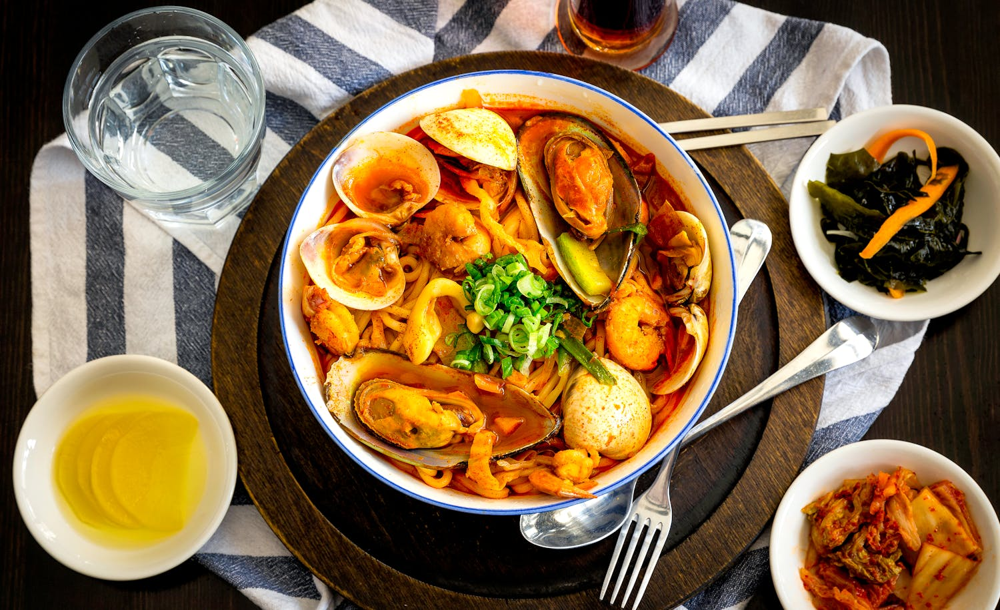

Greek and Korean Cuisine

Greek and Korean cuisines are known for his or her bold flavors, wealthy records, and various ingredients. While they'll appear worlds apart, the fusion of these culinary traditions offers a tantalizing blend of savory, highly spiced, and tangy dishes which can be sure to excite the taste buds. In this blog, we'll discover innovative recipes that deliver collectively the excellent of each worlds, combining the freshness of Greek elements with the confidence of Korean spices.
1. The Marriage of Flavors
At the coronary heart of Greek-Korean fusion delicacies lies the harmonious marriage of flavors. Greek delicacies is characterised by using its use of olive oil, clean herbs, and tangy cheeses, even as Korean cuisine boasts bold flavors like gochujang (fermented chili paste), soy sauce, and kimchi. By combining ingredients which include feta cheese with kimchi or tzatziki with bulgogi, cooks can create dishes that tantalize the flavor buds with a delightful combo of Mediterranean and Korean influences.
2. Creative Recipes:
Bulgogi Gyro this innovative dish combines thinly sliced marinated pork bulgogi with conventional Greek gyro fixings inclusive of tzatziki sauce, tomatoes, and onions, all wrapped in a warm pita bread. The result is a fusion of Korean and Greek flavors this is both savory and enjoyable.
3. Kimchi Spanakopita:
Traditional Greek spanakopita receives a highly spiced twist with the addition of kimchi to the spinach and feta cheese filling. The tangy, fermented flavor of the kimchi pairs perfectly with the creamy richness of the cheese, creating a unique and scrumptious appetizer or aspect dish.
4. Souvlaki Tacos:
A fusion of Greek souvlaki and Korean tacos, this dish capabilities marinated grilled bird or beef wrapped in warm tortillas and topped with a tangy Greek yogurt sauce, kimchi, and shredded lettuce. The mixture of savory meats, creamy sauce, and spicy kimchi creates a mouthwatering explosion of flavors.
5.Tips for Creating Fusion Recipes:
- Experiment with exceptional mixtures of ingredients to locate an appropriate stability of flavors.
- Don't be afraid to combine and match cooking techniques from each cuisines, which include grilling, braising, or stir-frying.
- Incorporate conventional Greek and Korean spices and condiments, which includes oregano, garlic, sesame oil, and gochugaru (Korean chili flakes), to beautify the taste profile of your dishes.
- Be conscious of texture and presentation, as both play an essential position inside the entertainment of fusion delicacies.
Conclusion:
Greek-Korean fusion cuisine offers a international of culinary opportunities, where the flavors of two distinct cultures come collectively to create some thing certainly fantastic. Whether you are a pro chef or an adventurous home cook, exploring the colourful and various world of Greek-Korean fusion recipes is positive to encourage your palate and ignite your creativeness. So accumulate your substances, stir up the stove, and put together to embark on a delicious culinary journey that celebrates the best of each worlds.